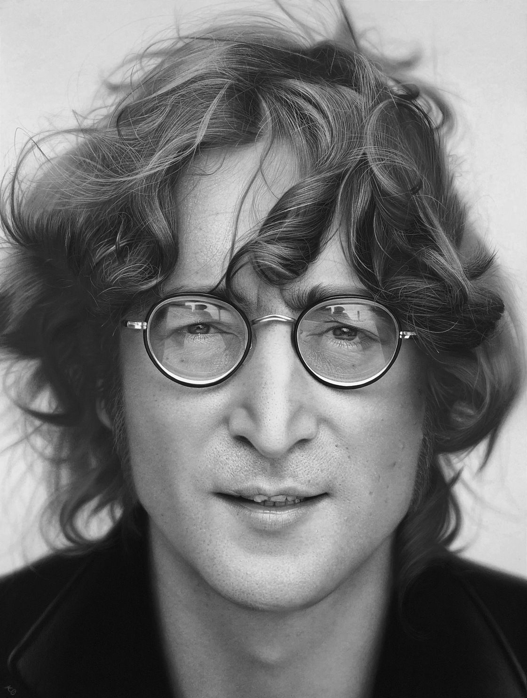
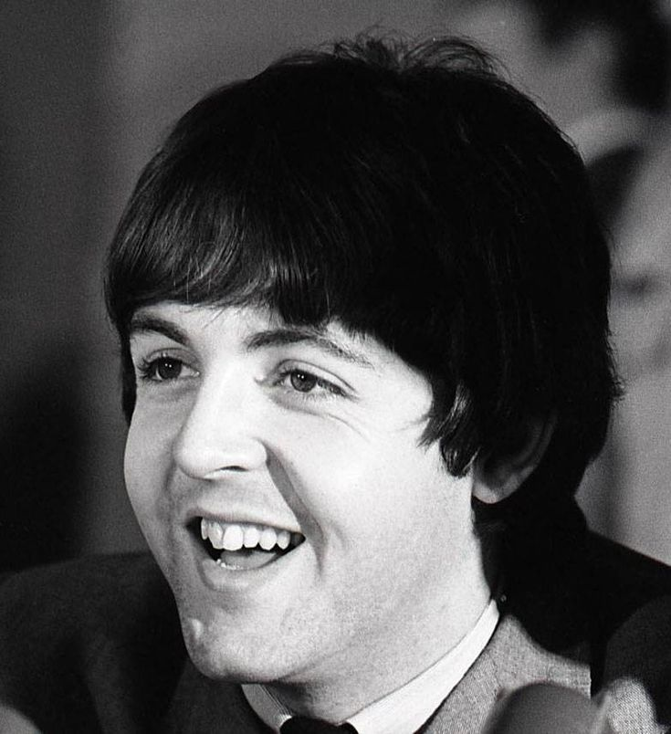
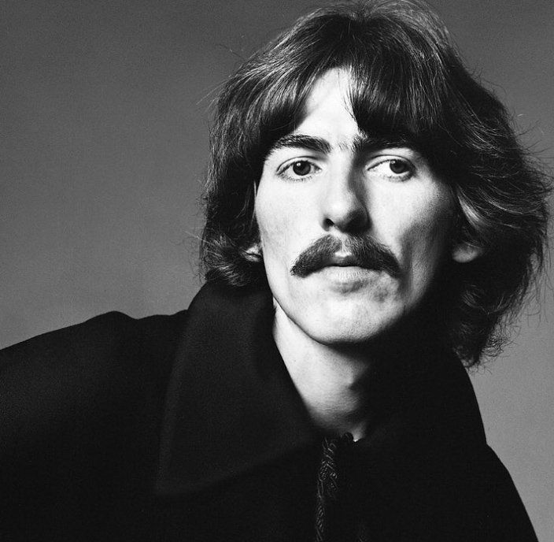
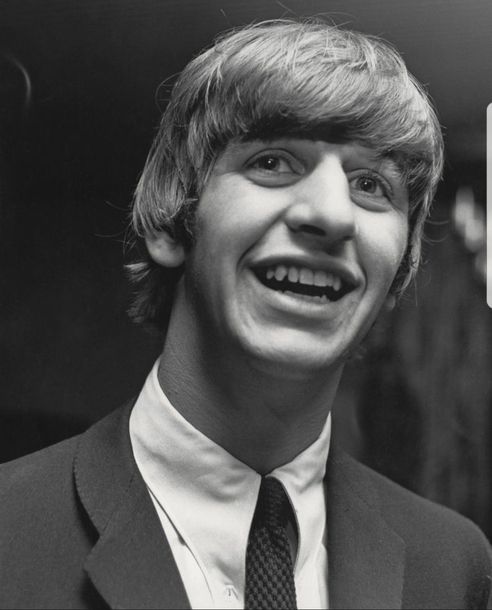

Общая информация о The Beatles
Название: "The Beatles" ("Битлз"; отдельно участников ансамбля называют "битлами")Страна: Великобритания (г. Ливерпуль)
Годы: 1960-1970
Состав группы:

Джон Ленон
(ритм-гитара, соло-гитара, клавишные, бубен, маракасы, бас-гитара, губная гармошка, вокал)
(ритм-гитара, соло-гитара, клавишные, бубен, маракасы, бас-гитара, губная гармошка, вокал)

Пол Макартни
(бас-гитара, клавишные, ударные, гитара, вокал)
(бас-гитара, клавишные, ударные, гитара, вокал)

Джордж Харрисон
(соло-гитара, ритм-гитара, ситар, бубен, клавишные, вокал)
(соло-гитара, ритм-гитара, ситар, бубен, клавишные, вокал)

Ринго Стар
(ударные, ритм-гитара, бубен, маракасы, коубелл, бонги, клавишные, вокал)
(ударные, ритм-гитара, бубен, маракасы, коубелл, бонги, клавишные, вокал)
Также в разное время в составе группы выступали:
- Пит Бест (ударные, вокал)
- Стюарт Станклифф (бас-гитара, вокал)
- Джимми Никол (ударные)
После распада группы, произошедшего в 1970 году, каждый из её участников начал сольную карьеру.